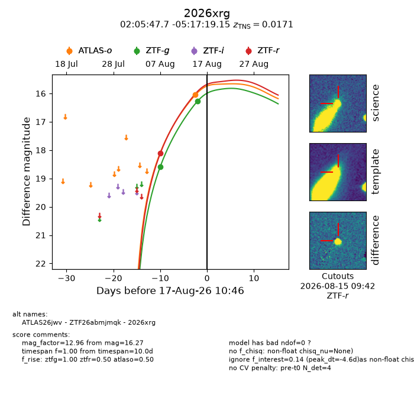
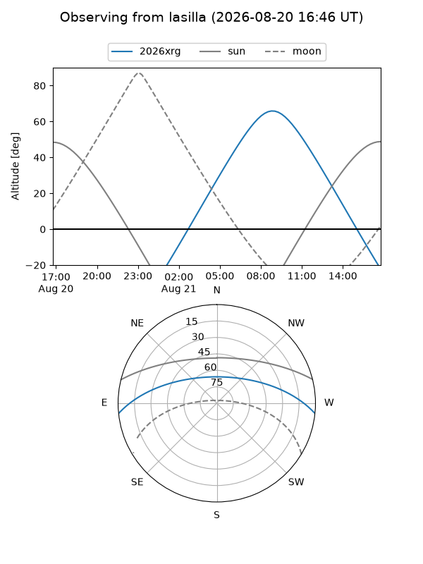
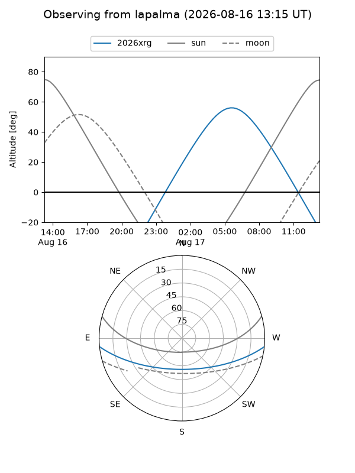
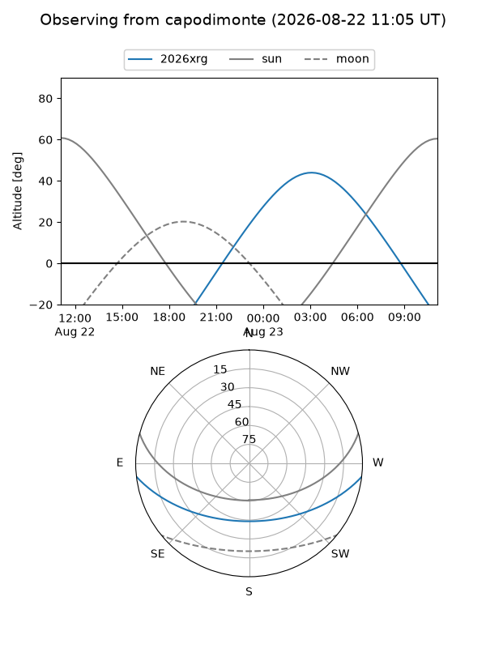
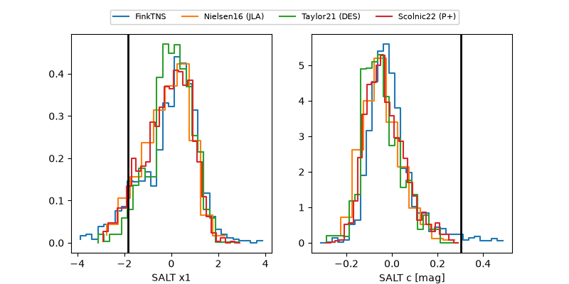

2026xrg
Target 2026xrg at 2026-08-17 10:51
Aliases and brokers:
FINK-ZTF: ztf.fink-portal.org/ZTF26abmjmqk
Lasair-ZTF: lasair-ztf.lsst.ac.uk/objects/ZTF26abmjmqk
ALeRCE-ZTF: alerce.online/object/ZTF26abmjmqk
YSE-PZ: ziggy.ucolick.org/yse/transient_detail/2026xrg
TNS name: wis-tns.org/object/2026xrg
Direct TNS query: direct search
alt names
ZTF26abmjmqk (ztf,fink_ztf)
2026xrg (tns,yse)
ATLAS26jwv (atlas)
Coordinates:
equatorial (ra, dec) = 31.4486,-5.28865
equatorial (HMS+DMS) = 02:05:47.66,-05:17:19.15
galactic (l, b) = (165.2745,-61.88398)
Flags:
TNS type: SN Ia
TNS redshift: 0.0171
peak dt: -4.6
Photometry:
last atlaso=16.05, ztfg=16.27, ztfr=18.11
1 atlaso, 2 ztfg, 1 ztfr detections
Lightcurve

Visibility



Additional plots
